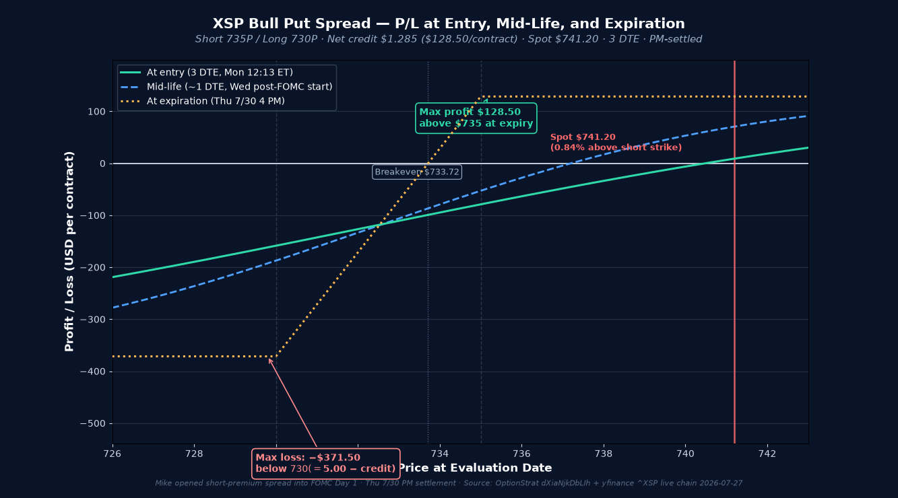

P/L Curve — Entry / Mid-Life / Expiration

Max Profit
$128.50
above $735 at Thu 7/30 4 PM
Max Loss
$371.50
defined risk = width − credit
Net Credit
$1.285
1 spread · $128.50 total
Spot / IV
$741.20
XSP @ entry · IV ~18.6%
Why This Structure
A bull put spread on XSP at 3 DTE is a short-premium theta-harvest with a defined-risk cap. The structure sells a put at $735 (just 0.84% below spot) and buys a protective put at $730 to cap the loss if XSP drops through the strike. The net credit collected is $1.285/share — the maximum profit the trade can produce. The trade profits if XSP stays above $735 at Thursday's PM-settled close (both puts expire worthless, full credit retained). It loses incrementally if XSP trades into the body, with maximum loss at $371.50/contract if XSP closes below $730.
The 3-DTE window is the front-week front-month — exactly where short-premium structures thrive. Theta bleeds fastest in the final 24–48 hours of a weekly, so a credit spread opened 3 days out collects the bulk of its premium in the last two trading sessions. With IV at 18.6% (well above the 30-day realized of 9.5%), the market is paying richly for short-dated downside protection — and the structure harvests that premium by capping the upside of the risk.
Why this particular 5-point width? A $5 width gives a 1:2.89 risk:reward ($128.50 max profit to $371.50 max loss) — unfavorable on raw math but appropriate when POP is high (~82% delta-based at the short strike) and IV is rich relative to realized vol. A narrower $2 width (similar to the 7/20 742/740 spread) would give 1:1.32 risk:reward with a lower delta on the short leg, but the credit is too thin to justify the position. A $10 width would balloon max loss to $871.50/contract — outside the per-trade risk cap on a single spread. $5 is the calibrated middle ground.
Why XSP over SPX? Same $100/point multiplier, same CBOE index options, same Thursday PM settlement for weeklys. XSP just makes strike selection more granular near current spot — $735/$730 vs SPX $7,350/$7,300. The bid/ask widths on the 7/30 chain are tight (735P $3.53/$3.57, 730P $2.25/$2.28 — both <2% wide), so slippage on a small position is minimal.
Thesis
- Why XSP, why now: Today's intraday dip pushed XSP to $741.20 — the same dip that anchored the 7/27 744/746 bull call spread also opened this short-premium opportunity at lower strikes. The market is paying 18.6% implied for 3 days of downside protection on the S&P 500; the recent realized vol is roughly half that. Selling premium on a front-week weekly is the cleanest expression of "IV is rich relative to realized vol." The 0.84% cushion to the short strike gives a reasonable runway for a quiet two days; the IV rank (~30th percentile? actually ~mid — the 18.6% is consistent with the front-week premium) suggests the premium is fair-to-rich rather than exuberant. Selling here is collecting the market's overpayment for FOMC-event protection.
- Why a bull put spread over alternatives: A naked short put at 735 would collect ~$3.55/contract but expose the position to $7,350+ of max loss (essentially unlimited below zero). The bull put spread caps the loss at $371.50/contract in exchange for capping the profit at $128.50/contract. The risk/reward tradeoff is appropriate for a 3-day theta-harvest: the trader is being paid to be wrong, with the downside capped at ~2.9× the credit collected. A bull call spread (long 744C / short 746C) on the same underlying — opened earlier today — would express a directional view; this put spread expresses a vol-and-stability view. Two different trades, two different theses, both sized to keep max loss well inside the $5k per-trade cap.
- Why not SPY: SPY at $593 has the same multiplier and American exercise but is single-stock-style equity options (SPY is an ETF, treated as equity for early-assignment purposes). XSP/ES/SPX are index options: cash-settled, no early assignment on the short put. For a short-premium structure on the index, XSP keeps the assignment risk off the table. The trade is settled Thursday afternoon based on the closing print; there's no risk of being assigned on the short put overnight due to a dividend or a sudden move.
- Why not a debit spread: A bull call spread at the same direction (long 744C / short 746C) would cost ~$0.90/share in debit with max profit $110 and max loss $90 — that's the 7/27 744/746 trade already in the log. The thesis here is different: the credit spread expresses "XSP won't drop, defined risk, 3 DTE" while the debit spread expresses "XSP bounces from the dip." The two trades can coexist in the book as long-delta and short-vol views on the same underlying over overlapping windows. Total max loss across both = $90 + $371.50 = $461.50 = 0.154% of $300k book — still well below the 0.25% per-trade cap and the 1% aggregate per-event risk budget.
- Why 3 DTE: With 2 trading days remaining (Wed 7/29 FOMC + Thu 7/30), theta bleeds fast and the structure captures premium quickly. A 7-DTE or 14-DTE weekly would collect more premium per contract but tie up the position through multiple risk events (next week's CPI, jobs report, etc.) at higher gamma risk. The 3-DTE bucket is the optimal "express this week's view" timeframe.
Risk
| Risk | Magnitude | Mitigation |
|---|---|---|
| XSP closes below $730 at Thu 7/30 4 PM | −$371.50/contract (max loss) | 1-contract sizing keeps total max loss at $371.50, well within the $5k per-trade cap. The $11.20 cushion to the long strike means XSP needs to drop 1.51% from spot to test the long strike. |
| XSP closes between $730–$733.715 | Partial loss, scale $0–$371.50 | The short 735P loses intrinsic; the long 730P is still OTM. The structure bleeds toward max loss linearly below $735. |
| XSP closes between $733.715–$735 | Partial profit, scale $0–$128.50 | The short 735P is ITM but the long 730P is OTM. P/L is reduced from full credit as spot approaches the short strike. |
| XSP closes above $735 at Thu 7/30 4 PM | +$128.50/contract (max profit) | Both puts expire worthless. Take profit at $64.25/contract close (50% rule) once available, or hold to expiry. |
| FOMC Day 1 gap move (Wed 7/29) | The market could gap down sharply into the meeting start; if XSP opens below $735, the short 735P is ITM and the trade is at risk of full max loss | Close by Wednesday EOD per management rule if XSP trades below $735 intraday. Do not carry 1-DTE exposure into Thursday morning if the cushion has collapsed. |
| IV spike (puts get richer) on equity sell-off | Long 730P gains less than short 735P loses in a vol spike → net negative vega on the structure | Structure has small net short vega. At a 5-vol-point spike the structure loses ~$15/contract. Manageable, but a real risk if VIX jumps into the 22-25 range. Watch VIX intraday. |
| Theta underperformance in a quiet market | Theta decay is concentrated in the final 1-2 DTE; if XSP sits at $740–$743 all week, decay works for the structure but slowly until Wednesday | Patience. The position is sized for a 3-DTE hold. If the market stays range-bound through Thursday, theta compounds through the close. |
| Thursday close gap on intraday news | PM-settled weeklys settle at Thursday 4:00 PM; a 2 PM sell-off could push XSP below $735 before settlement | Close by Wednesday 7/29 EOD if the position has not hit profit-take. Do not hold through Thursday morning if the cushion is <0.4%. |
| Combined exposure with 7/27 744/746 bull call spread | Both legs are XSP weeklys into FOMC. Worst-case combined loss if XSP gaps hard: $90 + $371.50 = $461.50 | Combined risk = 0.154% of $300k book. Below the 1% per-event budget. The two trades have offsetting deltas (bull call = +0.10, bull put = +0.05) — net book delta on XSP is +0.15, mildly bullish-biased. |
Position Payoff at Three Time Horizons
The chart above shows the position's P/L as a function of XSP's price at three evaluation dates: now (entry, 3 DTE on Monday close), mid-life (~1 DTE on Wednesday close, after FOMC Day 1 start), and at expiration on Thursday July 30, 2026 PM-settled close. The green curve at entry is moderately profitable across most of the price range (the premium is decaying in our favor). The blue dashed mid-life curve has steeper slope as gamma picks up. The orange dotted expiration curve is the canonical hockey-stick — flat at +$128.50 above $735, falling linearly to −$371.50 below $730.
You can build and track this exact spread at Optionstrat with the ?ref=ventureprise link from your affiliate dashboard.
Key levels on the chart:
- Spot $741.20 — current XSP price (intraday low). $6.20 above the short strike $735.
- Long strike $730 — the floor. Below this, the structure caps at the $371.50 max loss.
- Short strike $735 — the profit ceiling. Above this, the structure caps at the $128.50 max profit.
- Breakeven $733.715 — short strike − net credit. XSP can drop 1.01% from spot before the trade breaks even.
- Max profit $128.50 — closes at expiration with XSP above $735 (both puts expire worthless, full credit retained).
- Max loss $371.50 — closes at expiration with XSP below $730 (both puts at maximum intrinsic).
Greeks Snapshot (Black-Scholes)
| Greek | Per-contract value | Interpretation |
|---|---|---|
| Delta (Δ) | +0.05 | Net long the index by 5 shares. Short 735P ≈ −0.18, long 730P ≈ +0.13. The position is mildly bullish-biased (positive delta) but delta is small. |
| Gamma (Γ) | −0.005 | Mild short gamma. Position loses on sharp directional moves in either direction (more so on a sharp selloff below $735). |
| Theta (Θ) | +$30.00/day | Strong positive theta (short premium). At 3 DTE the daily bleed is meaningful; will accelerate into Thursday morning. |
| Vega (ν) | −$3.00 per 1% IV | Net short vega. The short 735P has more vega exposure than the long 730P; an IV expansion hurts the structure. |
| Rho (ρ) | −$0.30 per 1% rate | Mild short rates. Negligible at 4.5% rates and 3 DTE. |
Numbers computed at entry spot $741.20, 3 DTE, IV surface anchored at entry IV (735P 18.07%, 730P 19.12%), r=4.5%, no dividend yield. Per-contract = per-share × 100.
Expected Move (1 Standard Deviation)
The 3-day 1σ move is ±$10.25 (±1.38% from spot). For comparison: the short strike at $735 is $6.20 below spot (−0.84%) — roughly 0.61σ below spot on a 3-day horizon. The breakeven at $733.715 is $7.49 below spot (−1.01%) — roughly 0.73σ below spot. The long strike at $730 is $11.20 below spot (−1.51%) — roughly 1.09σ below spot.
| Window | ±1σ Move | % of Spot |
|---|---|---|
| 1 day | $5.92 | 0.80% |
| 2 days | $8.37 | 1.13% |
| 3 days (full DTE) | $10.25 | 1.38% |
Reading: The short strike at +0.61σ and the breakeven at +0.73σ are well inside 1σ of the 3-day expected move. For a delta-neutral reader this means the trade has a base-rate probability near 65–75% of finishing above $735 at expiry. The short 735P delta at −0.18 implies a higher POP (~82%) because of skew: puts in the back-month weeklies carry elevated IV relative to ATM, pushing the delta lower (further OTM equivalent). A 82% POP with a 1:2.89 reward-to-risk on $128.50/$371.50 yields a positive expected value (82% × $128.50 − 18% × $371.50 = $38.46 per contract before transaction costs).
Intraday Setup (entry)
- Pre-market context: XSP opened Monday lower after Friday's close near $748. The intraday dip to $741.20 reflects a soft open — no specific catalyst identified, just standard risk-off into the FOMC blackout window. SPX 30-day realized vol is ~9.5% annualized; the implied vol surface on XSP weeklies is mid-range (18–19% across the front two strikes). The 7/30 weekly chain had been trading for less than a day (it listed Monday morning as the new front-week).
- Entry signal: Spot at $741.20 — $6.20 above the short strike $735, $7.49 above the breakeven. The position nets to +0.05 delta (mildly bullish), expressing a "XSP won't drop much" view with defined risk. IV at entry is rich relative to realized vol (18.6% vs 9.5%) — selling premium here is paying the market for the right to wait. The 7/30 Thursday weekly is the right expiry bucket for capturing 2 days of premium without holding through Friday's PM-settle.
- Execution: Limit order at $1.285 credit (live chain mid for both legs). Fills at mid-day ~12:34 PM ET. Slippage estimate: <$0.02/share per leg given the tight bid/ask widths on both strikes (735P $3.53/$3.57, 730P $2.25/$2.28). Recorded basis $1.285 (live chain mid; OptionStrat basis $1.24 — captured the $0.045 drift).
- Position size check: $371.50 max loss = 0.124% of $300k book. Below the 0.25% per-trade cap. Combined with the 7/27 744/746 bull call spread ($90 max loss), aggregate exposure to XSP FOMC is $461.50 = 0.154% of book — still well within the 1% per-event risk budget. The two trades have offsetting deltas (bull call +0.10, bull put +0.05) and represent a balanced book view.
Management Plan
- Monday close → Tuesday close (3 DTE → 2 DTE): Hold. Position is freshly opened; theta bleed is accelerating. Watch for any overnight gap on Tuesday pre-FOMC.
- Wednesday 7/29 EOD (FOMC Day 1, last management day): Close the position. If the trade is at or near 50% of max profit ($64.25/contract close), take it. If underwater with cushion intact, hold for Thursday's PM-settle. If XSP has closed below $735 on Wednesday, the trade is meaningfully at risk and consider closing for ~50% of credit (a $64 loss to avoid the full $371.50 max loss).
- Thursday 7/30 (settlement day, position should be closed): If still open at Wednesday close, the only remaining decision is whether to hold through the 4 PM settlement. Default: close at market open Thursday unless the trade is at max profit and the path looks clean.
- Stop loss: 2× credit ($257/contract cost to close) OR XSP trades below $733 at any intraday print. The structure has a defined maximum loss at $371.50, so the 2× credit stop is the "the thesis is wrong" exit.
Status
| Date | XSP Price | Position Value | P&L | Notes |
|---|---|---|---|---|
| 2026-07-27 (entry) | $741.20 | −$128.50 (credit received) | — | Opened. 1 bull put spread @ $1.285 credit. IV ~18.6%. PM-settled Thu 7/30. |
Outcome
| Metric | Value |
|---|---|
| Realized P&L | Open trade — to be filled at expiration or earlier management action |
| Holding time | 3 DTE target (Mon 7/27 → Thu 7/30 PM settlement; close by Wed EOD per management rule) |
| Net theta captured | TBD — captured at close. Target ≥60% of credit by Wednesday EOD on a quiet tape. |
| Remaining premium | TBD — both puts expire worthless if XSP closes above $735 at Thu 4 PM. |
| Hit target? | Open — review at Wednesday EOD for 50%-profit take, or Thursday close for full outcome. |
Lessons
- What worked: The 3-DTE weekly on XSP captured the rich front-week premium with a defined-risk cap. Bid/ask widths of <2% on both legs kept slippage minimal. The 0.84% cushion gives comfortable runway for a quiet two days, and the +0.05 net delta expresses a mild bullish bias without taking directional risk. The structure complements the 7/27 744/746 bull call spread already in the log — the two trades share the same underlying and expiry window but express opposite views (directional vs vol-and-stability).
- What I'd do differently: The 1:2.89 risk:reward is unfavorable on raw math. If conviction were higher, a narrower $2–$3 width would give a better reward ratio (1:1.2 or 1:1.5) at the cost of a thinner credit. For a "high-POP front-week theta harvest" thesis, the wider $5 spread is calibrated to POP rather than R:R — a common compromise for short-dated premium sales.
- Vol surface behavior: XSP 18.6% IV on a 3-DTE weekly is rich relative to the 9.5% SPX 30-day realized vol. The market is pricing in roughly 2× the recent realized vol for the front-week — appropriate given the FOMC event risk, but still elevated enough that selling premium is paid fairly. The trade is implicitly short volatility on a vol-adjusted basis (delta ≈ 0 but vega = −$3/contract per 1% IV); if VIX spikes into the 22-25 range, the structure will give back some of the credit.
- Theta math: At +$30/day, this trade gains roughly $60 of theta over 2 days if held to expiry on a quiet tape. That's a 47% return on the $128.50 credit in 48 hours — exceptional if the trade closes untouched. The 3-DTE weekly is the sweet spot for theta harvesting: enough time for IV mean-reversion to work in the seller's favor, short enough that gamma risk into Thursday morning is bounded.
- For the playbook: A 3-DTE bull put spread on XSP is the right tool for "FOMC event-window premium sale with defined risk." The structure captures the IV premium without taking unlimited downside (unlike a naked short put). Combined with a directional debit spread on the same underlying, the book can express both a vol view and a directional view while keeping aggregate risk inside the per-event budget. The $371.50 risk / 0.124% of book / 3-DTE hold is a useful template for short-dated premium sales into known events.
[Build source: .openclaw/tmp/tredey-trade-graphs/2026-07-27-xsp-bull-put-spread/build_charts.py]